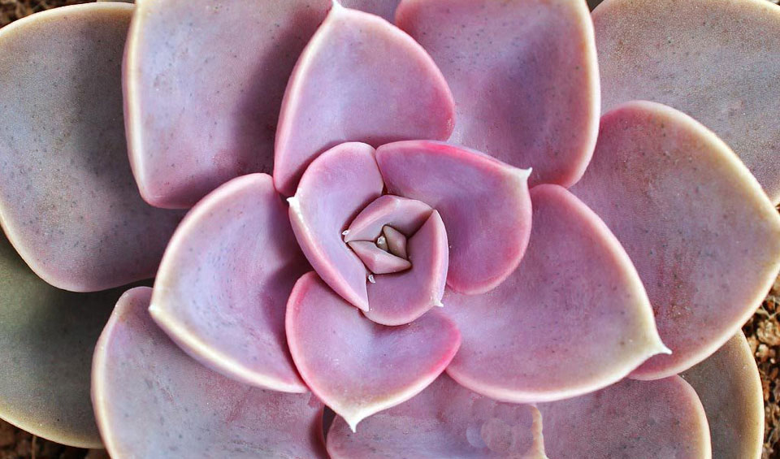
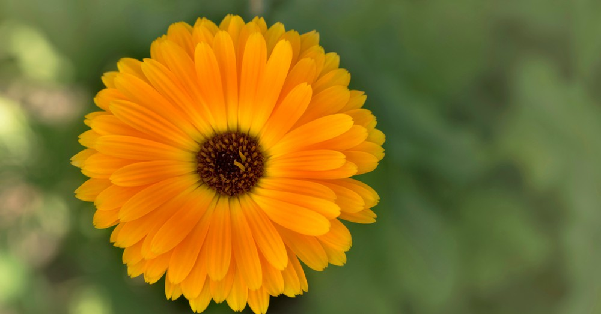
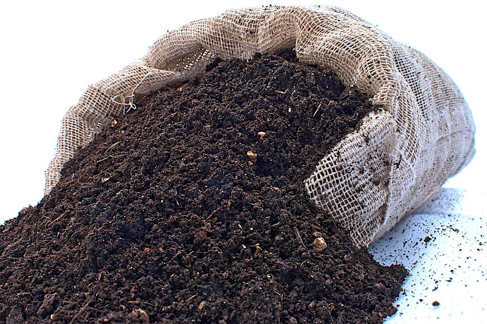
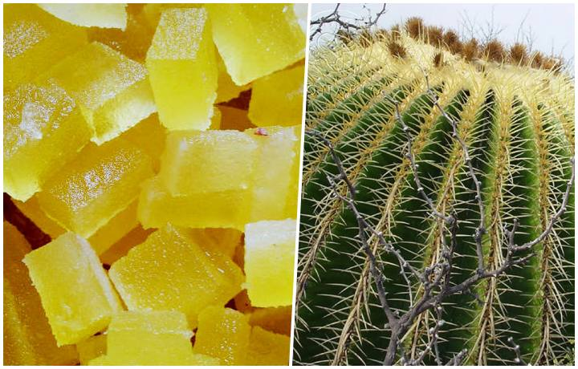
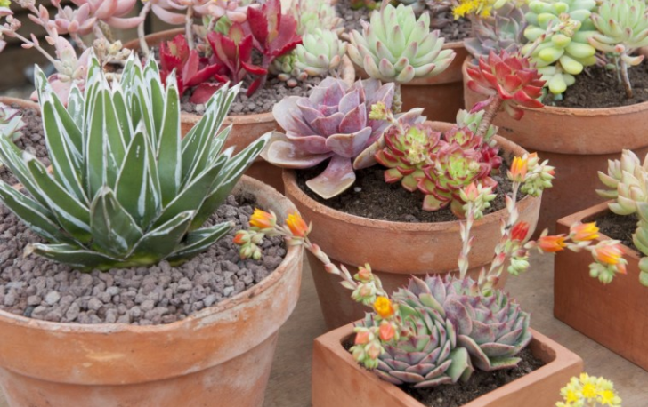

|
Bienvenido a Plantastica!!, en este blog podrás conocer todo a cerca de plantas, donde encontrarás los consejos necesarios para sus cuidados y el mejor aprovechamiento que nos provee la tierra como lo son los sustratos, fertilizantes naturales, preparación de tierra, entre muchos consejos más que podrás aprender a lo largo de este blog!! Sigamos aprendiendo juntos! |
|||
| TENDENCIAS EN PLANTASTICA | ||
|
Echeveria Perle-Von 
La echeveria Perle Von es una suculenta hermosa con tonos morados y rosas. Aprende a Cuidarla |
Caléndula 
La flor que se utiliza para hacer medicina. La caléndula es comúnmente usada para tratar las heridas, infecciones, etc. |
Humus de Lombriz 
Es uno de los abonos orgánicos estrella en la actualidad. Aprende más sobre este abono. |
|
Biznagas en Peligro de Extinción 
Enterate porque el acitrón coloca en peligro de extinción a un cacto mexicano |
Plantas Carnívoras 
Todo lo que es capaz de tragarse una planta carnívora |
Cuidados de suculentas 
Las plantas suculentas se han convertido en unas habituales para los principiantes en la jardinería |